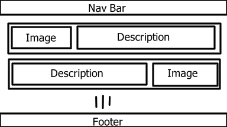

The Design Process
Since I like the layout of my first submission I have chosen to keep
the layout the same as that one.
The layout was simple, and the user could navigate to any page from
anywhere on the site, which is something I wanted to kep as it
aligns with good practice to give the user an out if they make a
mistake.
The Home/Landing Page
 This page is the first page a user sees, it is meant to serve as an
introduction to the site and to me. For this purpose, I have opted
to assume readers will read the site from left to right and see the
image of me first and then move to read the blurb on the right.
This page is the first page a user sees, it is meant to serve as an
introduction to the site and to me. For this purpose, I have opted
to assume readers will read the site from left to right and see the
image of me first and then move to read the blurb on the right.
My picture is almost the same size as the blurb to keep the site
somewhat balanced, while the image is rounded to a circle to allow
for more open space. Peta's lecture mentioned that more open space
in a site gives the user more breathing room to take in the site
with less effort. To reinforce that idea, I have also placed
everything in neat easy to see containers, so that users can see
what is part of the site content and what is the open space. Giving
the user the space to breathe is incredibly important especially
with the blurb filling the right side of the screen with text.
The Blog Page
margin:0px 10px 10px 0px;
This page holds pieces of writing, and since most blogs are either
multiple pages or lists of short articles I decided to place each
piece in its own bubble to mark clear separations between pieces,
while emphasizing the headings for each one to clearly mark which
piece goes with which heading.
This page is all about communication and informaton, and thus the
focus must be on the text. For this reason the text is placed in the
centre and is the only thing that appears on the page for the most
part.
I tried to introduce some more color into this page through the
heading containers, since they also helped with the main goal of the
site to have clear cuts between blog entries. The color pulls some
attention towards itself and so reinforces the separations between
pieces.
Portfolio Page

This is the page where my projects ar to be displayed. The premise
is to give the user an idea of what I work on and the type of work I
have done to this point.
To that end I elected that each entry for my portfolio should have a
short description, an image and a link to the full project. Since I
have very few scaled projects to this point that I have done outside
of assignemnts, I have put a few assignemnts from last year and my
current project up for viewing, the current build and the project
files will be there.
The images and descriptions change sides to keep the page balanced,
the images being in color pull far too much attention to themselves
to be on a single side of the page together.
Style
Color Choices
To choose my colors I used a site called Coolors.com.
As mentioned in my reflection I wanted to make the color cheme
friendlier. To achive this I decided to use blues and shades of
white such as platinum and ivory.
I also chose to replace the image backgrounds with a CS generated
background simple to keep the site as consistent as possible, since
the images brought in oo much diversity from page to page. WHile
that goes against practice and having a different background is
another way to inform the user where they are and the current state
of the site, the nav bar already does an excellent job at that, and
I want the site to feel like one complete thing as opposed to
seeming lik different parts fused together.
Structure Choice
My choice to make my site appear as modular as possible (placing
things in bubbles) comes from how I prefer to code. I prefer to make
multiple classes/scripts to handle things in such a way that if I
were to remove most of them the system would still function without
them. In this case however it meant separating different parts from
eachother that did not need to be connected.
I attempted to achieve this by using margins and padding to create
open space between containers, and also by connecting things that
needed to be connected to fill the class of the container, like the
portfolio entries; they fill a single section container, but each
section is separated from one another.
I also rounded most edges that do not touch the edges of the window
to make the site feel more complete. The sharp edges can make a site
feel tacky and uncomfortable in my opinion.
As seen on the home and portfolo pages, the edge of the text
container and the corresponding image now touch. This is a decision
I made to accentuate that the image and text are connected.
Technical Process
From a technical point of view, I simply tried to follow the
structures and points André taught in his lectures on HTML and CSS,
the starting structure of the site was the site André made in th
lectures, however I decided to fill the inside with my own
structures using the lessons.
The home page was simple eough, making the picture and blurb fill
separate containers and then making them appear next to each other.
The portfolio page made a very weird issue. Since I was using the
float property to say which side of the container the image sat
meant the size of the container shrank to fit only the text without
fitting the image as well. As a crude work around I made the size of
the container a set size to fit the image with some extra space.
While this does mean every cell is the same size, when the size of
the window changes the height does not change to match how the image
size and text area sizes change.
The blog page is simple as well, each blog post needs its own cell,
that cell contains the heading that is made to stand out by use of
extra color, and the text with the post contents which removes the
blur filter in favor of the solid color.
Remembering a piece of informtion I found writing for the week 4 assignment. I remembered that text containers such as article or section containers cause the h1 to automatically become h2, but h2 containers do not become h3, and so I had to return to my pices that had multiple indented sections so that headings actually appear differently.
All pages now use relative font and container sizes to aid the scalability of the pages. However functionality to imporove visuals on narrow sreens still needs to be implemented.